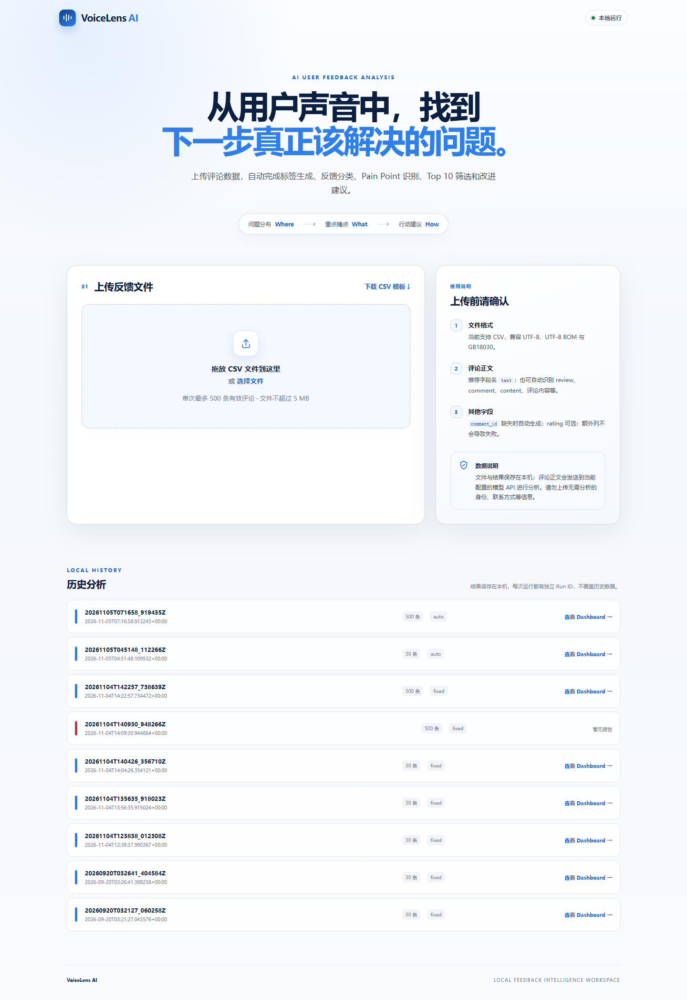
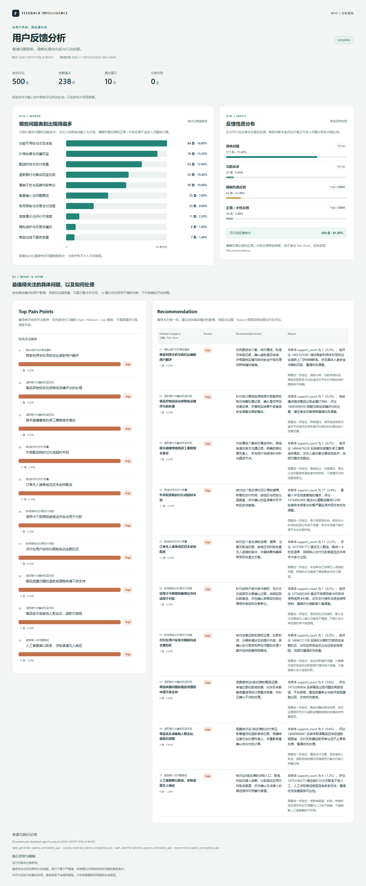

AI USER FEEDBACK ANALYSIS AGENT
从用户声音中，找到
下一步真正该解决的问题。
VoiceLens AI 将批量评论自动转化为问题分布、重点 Pain Points 与针对性行动建议，帮助产品和运营人员更快完成从“看评论”到“做决策”的第一轮分析。
Where问题在哪里
→
What优先关注什么
→
How下一步怎么做

真实样本验证
500 条评论
分类失败 0 条
INTERACTIVE DEMO
体验从上传文件开始
公开演示版允许在浏览器中选择和预览 CSV，但不会上传或调用模型。点击开始分析时会显示权限说明，你的 API Key 与费用不会暴露。
CSV
——
本地校验
估算记录—
文件大小—
文件类型CSV
数据处理仅浏览器
02
选择标签方式并开始
公开演示不会把所选文件发送到任何服务器。
PRODUCT VALUE
不是简单总结评论，而是形成决策入口
产品将分散的用户声音整理成三层信息，减少产品和运营人员在大量文本中反复阅读、归类和提炼的时间。
看清问题分布
统计各问题类别的评论数量与占比，并把反馈性质分布与问题频率分开呈现。
识别重点痛点
综合影响程度、支持频率和证据质量，从完整 Pain Point 池中筛选最值得关注的 Top 10。
给出行动方向
针对每个重点痛点生成 Recommended Action、Reason 和进一步验证事项，辅助人工决策。
END-TO-END WORKFLOW
一份 CSV，自动完成完整分析
用户上传文件并选择标签方式后，Agent 自动衔接各阶段；每次运行拥有独立 Run ID 和结果目录。
- 01导入与校验
识别正文列、编码与有效评论，生成标准化输入。
- 02动态标签
基于本批代表性反馈生成标签，也可复用或先预览确认。
- 03批量分类
系统自动分批调用模型，降低长请求超时风险。
- 04Pain Point 识别
只从具体问题与功能诉求中提取可行动痛点。
- 05Top 10 与建议
综合影响、频率和证据，输出优先关注项与建议。
- 06Dashboard
自动生成 Where、What、How 三层可视化报告。
REAL OUTPUT
500 条真实评论的分析结果
示例报告来自一次完整运行：500 条有效评论全部完成分类，识别 238 个完整痛点，并展示综合关注度最高的 10 项及对应行动建议。
- 问题类别频率与反馈性质分开呈现
- Top Pain Points 保留频率、影响与证据语境
- Recommendation 与重点痛点一一对应

点击查看完整报告 ↗PRODUCT ITERATION
从分析脚本到可复用 Agent
项目的关键迭代不是堆功能，而是持续校正服务对象、输入方式、分析粒度和输出价值。
MVP 分析流程
完成固定标签分类、问题统计、Pain Point、Priority 与 Recommendation。
可视化决策层
增加问题频率、重点痛点与行动建议 Dashboard，形成 Where–What–How。
Reusable Agent
统一 CSV 入口、配置、重试、运行状态和唯一 Run ID，实现单命令自动运行。
产品定位校正
从外卖菜品评价转向 App 产品评论，服务对象与数据来源重新对齐。
动态标签与网页端
支持自动生成、复用、预览标签；增加上传校验、进度展示和历史报告。
大批量可靠性
分类与痛点识别采用系统内部批处理和有限重试，用户仍只需上传一次。
SCOPE & LIMITS
把 AI 放在辅助决策的位置
CSV 自动校验、动态标签、批量分类、Pain Point、Top 10、建议、进度与静态报告。
频率不等于业务优先级；建议需结合公司战略、成本、复现情况和业务数据确认。
建立人工标注集验证分类准确率，增加跨批次趋势映射、权限控制与云端持久化。
VOICE OF USER → ACTION
让每一条用户反馈，都能进入更清晰的产品决策。
本页面为求职作品集公开演示版；真实分析 Agent 在本地运行，避免公开模型密钥和用户上传数据。
查看分析成果 ↗